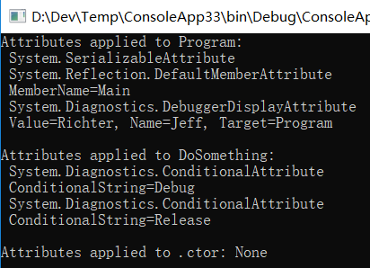
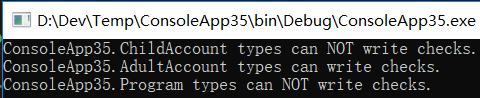
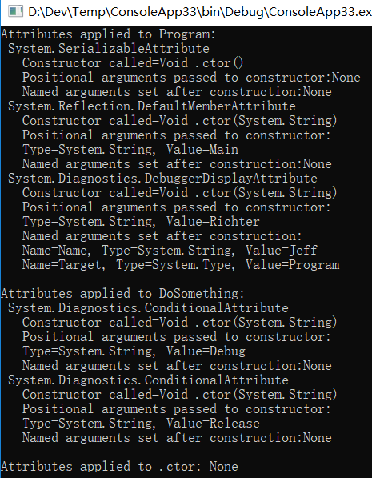

定制特性(Attribute)
作者：追风剑情 发布于：2021-3-10 10:28 分类：C#
本章内容：
● 使用定制特性
● 定义自己的特性类
● 特性构造器和字段/属性数据类型
● 检测定制特性
● 两个特性实例的相互匹配
● 检测定制特性时不创建从Attribute派生的对象
● 条件特性类
本章讨论 Microsoft .NET Framework 提供的最具创意的功能之一：定制特性(custom attribute)。利用定制特性，可宣告式地为自己的代码构造添加注解来实现特殊功能。定制特性允许为几乎每一个元数据表记录项定义和应用信息。这种可扩展的元数据信息能在运行时查询，从而动态改变代码的执行方式。使用各种.NET Framework 技术(Windows 窗体,WPF 和 WCF 等)，会发现它们都利用了定制特性，目的是方便开发者在代码中表达他们的意图。任何.NET Framework 开发人员都有必要完全掌握定制特性。
示例——定制特性
using System;
using System.Runtime.InteropServices;
[StructLayout(LayoutKind.Sequential, CharSet = CharSet.Auto)]
internal sealed class OSVERSIONINFO {
public OSVERSIONINFO() {
OSversionInfoSize = (UInt32) Marshal.SizeOf(this);
}
public UInt32 OSversionInfoSize = 0;
public UInt32 MajorVersion = 0;
public UInt32 MinorVersion = 0;
public UInt32 BuildNumber = 0;
public UInt32 PlatformId = 0;
[MarshalAs(UnmanagedType.ByValTStr, SizeConst = 128)]
public String CSDVersion = null;
}
internal sealed class MyClass {
[DllImport("Kernel32", CharSet = CharSet.Auto, SetLastError = true)]
//将In和Out特性应用于参数ver
public static extern Boolean GetVersionEx([In, Out] OSVERSIONINFO ver);
}
CLR 允许将特性应用于可在文件的元数据中表示的几乎任何东西。不过最常应用特性的还是以下定义表中的记录项：TypeDef(类、结构、枚举、接口和委托)，MethodDef(含构造器)，ParamDef， FieldDef, PropertyDef, EventDef， AssemblyDef 和 ModuleDef。更具体地说，C#只允许将特性应用于定义以下任何目标元素的源代码：程序集、模块、类型(类、结构、枚举、接口、委托)、字段、方法(含构造器)、方法参数、方法返回值、属性、事件和泛型类型参数。
应用特性时，C#允许用一个前缀明确指定特性要应用于的目标元素。以下代码展示了所有可能的前缀。许多时候，即使省略前缀，编译器也能判断特性要应用于什么目标元素(就像上例展示的那样)。但在其他时候，必须指定前缀向编译器清楚表明我们的意图。下面倾斜显示的前缀是必须的。
示例——特性前缀
using System; [assembly: SomeAttr]//应用于程序集 [module: SomeAttr]//应用于模块 [type: SomeAttr]//应用于类型 internal sealed class SomeType<[typevar: SomeAttr] T> {//应用于泛型类型变量 [field: SomeAttr]//应用于字段 public Int32 SomeAttrField = 0; [return: SomeAttr]//应用于返回值 [method: SomeAttr]//应用于方法 public Int32 SomeMethod ( [param: SomeAttr]//应用于参数 Int32 SomeParam) { return SomeParam; } [property: SomeAttr]//应用于属性 public String SomeProp { [method: SomeAttr]//应用于get访问器方法 get { return null; } } [event: SomeAttr]//应用于事件 [field: SomeAttr]//应用于编译器生成的字段 [method: SomeAttr]//应用于编译器生成的 add & remove 方法 public event EventHandler SomeEvent; }
前面介绍了如何应用定制特性，现在看看特性到底是什么。定制特性其实是一个类型的实例。为了符合“公共语规范”(CLS)的要求，定制特性类必须直接或间接从公共抽象类System.Attribute 派生。C#只允许符合 CLS 规范的特性。查看文档会发现定义了以下类(参见前面的例子)：StructLayoutAttribute，MarshalAsAttribute，DllImportAttribute，InAttribute 和 OutAttribute。所有这些类碰巧都在 System.Runtime.InteropServices 命名空间中定义。但特性类可以在任何命名空间中定义。进一步查看，会发现所有这些类都从System.Attribute 派生，所有符合 CLS 规范的特性类都肯定从这个类派生。
如前所述，特性是类的实例。类必须有公共构造器才能创建它的实例。所以，将特性应用于目标元素时，语法类似于调用类的某个实例构造器。除此之外，语言可能支持一些特殊的语法，允许设置与特性类关联的公共字段或属性。前面的例子将 DllImport 特性应用于
GetVersionEx方法：
[DllImport("Kerne132", Charset = Charset.Auto, SetLastError = true)]
这一行代码的语法表面上看很奇怪，因为调用构造器时永远不会使用这样的语法。查阅DllImportAttribute 类的文档，会发现它的构造器要求接受一个 String 参数。在这个例子中，"Kernel32"将传给这个参数。构造器的参数称为定位参数(positional parameter)，而且是强制性的；也就是说，应用特性时必须指定参数。
那么，另外两个“参数”是什么呢？这种特殊的语法允许在构造好 DllImportAttribute 对象后设置对象的任何公共字段或属性。在这个例子中，将"Kernel32"传给构造器并构造好DllImportAttribute 对象之后，对象的公共实例字段 CharSet 和 SetLastError 分别设为CharSet.Auto 和 true。用于设置字段或属性的“参数”称为命名参数(named parameter)。这种参数是可选的，因为在应用特性的实例时不一定要指定参数。稍后会解释是什么导致了实际地构造 DllImportAttribute 类的实例。
还要注意，可将多个特性应用于一个目标元素。例如，在本章的第一个示例程序中，GeVersionEx方法的 ver 参数同时应用了 In 和 Out 这两个特性。将多个特性应用于单个目标元素时，注意特性的顺序无关紧要。另外，在 C#中，既可将每个特性都封闭到一对方括号中，也可在一对方括号中封闭多个以逗号分隔的特性。如果特性类的构造器不获取参数，那么圆括号可以省略。最后，就像前面说到的那样，Attribute 后缀也是可选的。下面代码行具有相同的行为，它们演示了应用多个特性时所有可能的方式：
[Serializable][Flags]
[Serializable, Flags]
[FlagsAttribute, SerializableAttribute]
[FlagsAttribute()][Serializable()]
定义自己的特性类
示例——定义自己的特性类
namespace System {
public class FlagsAttribute : System.Attribute {
public FlagsAttribute() {
}
}
}
注意，FlagsAttribute 类从 Attribute 继承。这使 FlagsAttribute 类成为符合 CLS 规范的定制特性。此外，注意类名有 Attrtibute 后缀：这是为了保持与标准的相容性，但这并不是必须的。最后，所有非抽象特性至少要包含一个公共构造器。上述代码中的 FlagsAttribute构造器非常简单，不获取任何参数，也不做任何事情。
我通常不鼓励使用公共字段。特性也不例外，我同样不鼓励在这种类型中使用公共字段。使用属性要好得多。因为在更改特性类的实现方式时，属性能提供更大的灵活性。
现在的情况是 FlagsAttribute 类的实例能应用于任何目标元素。但事实上，这个特性应该只能应用于枚举类型，应用于属性或方法是没有意义的。为了告诉编译器这个特性的合法应用范围,需要向特性类应用 System.AttributeUsageAttribute 类的实例。下面是新的代码:
示例——定义自己的特性类
namespace System {
//AttributeUsage告诉编译器此特性只能用于枚举
//Inherited 该值确定指示的属性是否由派生类和重写成员继承
[AttributeUsage(AttributeTargets.Enum, Inherited = false)]
public class FlagsAttribute : System.Attribute {
public FlagsAttribute() {
}
}
}
新版本将 AttributeUsageAttribute 的实例应用于特性。毕竟，特性类型本质上还是类，而类是可以应用特性的。AttributeUsage 特性是一个简单的类，可利用它告诉编译器定制特性的合法应用范围。所有编译器都内建了对该特性的支持，并会在定制特性应用于无效目标时报错。在这个例子中，AttributeUsage 特性指出 Flags 特性的实例只能应用于枚举类型的目标。
示例——AttributeUsageAttribute
[Serializable]
[AttributeUsageAttribute(AttributeTargets.Class, Inherited=true)]
public sealed class AttributeUsageAttribute : Attribute {
internal static AttributeUsageAttribute Default =
new AttributeUsageAttribute(AttributeTargets.All);
internal Boolean m_allowMultiple = false;
internal AttributeTargets m_attributeTarget = AttributeTargets.All;
internal Boolean m_inherited = true;
// 这是一个公共构造器
public AttributeUsageAttribute(AttributeTargets validOn) {
m_attributeTarget = validOn;
}
internal AttributeUsageAttribute(AttributeTargets validOn,
Boolean allowMultiple, Boolean inherited) {
m_attributeTarget = validOn;
m_allowMultiple = allowMultiple;
m_inherited = inherited;
}
//是否允许特性向目标元素应用多次
public Boolean AllowMultiple {
get { return m_allowMultiple; }
set { m_allowMultiple = value; }
}
//派生类是否可继承特性
public Boolean Inherited {
get { return m_inherited; }
set { m_inherited = value; }
}
public Boolean ValidOn {
get { return m_attributeTarget; }
}
}
示例——AttributeTargets
[ComVisible(true)]
[Flags]
public enum AttributeTargets
{
//可以对程序集应用特性。
Assembly = 1,
//可以对模块应用特性。
Module = 2,
//可以对类应用特性。
Class = 4,
//可以对结构应用性，即值类型。
Struct = 8,
//可以对枚举应用特性。
Enum = 16,
//可以对构造函数应用特性。
Constructor = 32,
//可以对方法应用特性。
Method = 64,
//可以对属性 (Property) 应用特性。
Property = 128,
//可以对字段应用特性。
Field = 256,
//可以对事件应用特性。
Event = 512,
//可以对接口应用特性。
Interface = 1024,
//可以对参数应用特性。
Parameter = 2048,
//可以对委托应用特性。
Delegate = 4096,
//可以对返回值应用特性。
ReturnValue = 8192,
//可以对泛型参数应用特性。
GenericParameter = 16384,
//可以对任何应用程序元素应用特性。
All = 32767
}
注意，.NET Framework 只认为类、方法、属性、事件、字段、方法返回值和参数等目标元素是可继承的。所以，定义特性类型时，只有在该特性应用于上述某个目标的前提下，才应该将 Inherited 设为 true。注意，可继承特性不会造成在托管模块中为派生类型生成额外的元数据。
特性构造器和字段/属性数据类型
定制特性类可定义构造器来获取参数。开发人员在应用特性类的实例时必须指定这些参数,还可在类中定义非静态公共字段和属性，使开发人员能为特性类的实例选择恰当的设置。定义特性类的实例构造器、字段和属性时，可供选择的数据类型并不多。具体地说，只允许 Boolean, Char, Byte, SByte, Int16, UInt16, Int32，UInt32，Int64，UInt64, Single,Double，String， Type， Object 或枚举类型。此外，可使用上述任意类型的一维 0 基数组。但应尽量避免使用数组，因为对于定制特性，如果它的构造器要获取数组作为参数，就会失去与 CLS 的相容性。
应用特性时必须传递一个编译时常量表达式，它与特性类定义的类型匹配。在特性类定义了一个Type参数、Type 字段或者 Type 属性的任何地方，都必须使用 C# typeof操作符(如下例所示)。在特性类定义了一个 Object 参数、Object 字段或者 Object 属性的任何地方，都可传递一个 Int32、String 或其他任何常量表达式(包括 null)如果常量表达式代表值类型，那么在运行时构造特性的实例时会对值类型进行装箱。以下是一个示例特性及其用法：
示例
using System;
internal enum Color { Red }
[AttributeUsage(AttributeTargets.All)]
internal sealed class SomeAttribute : Attribute {
public SomeAttribute(String name, Object o, Type[] types) {
// 'name'引用一个String
// 'o'引用一个合法的类型(如有必要，就进行装箱)
// 'types'引用一个一维0基Type数组
}
}
[Some("Jeff", Color.Red, new Type[] { typeof(Math), typeof(Console) })]
internal sealed class SomeType { }
逻辑上，当编译器检测到向目标元素应用了定制特性时，会调用特性类的构造器，向它传递任何指定的参数，从而构造特性类的实例。然后，编译器采用增强型构造器语法所指定的值，对任何公共字段和属性进行初始化。构造并初始化好定制特性类的对象之后，编译器将它的状态序列化到目标元素的元数据表记录项中。
检测定制特性
仅仅定义特性类没有用。确实可以定义自己想要的所有特性类，并应用自己想要的所有实例。但这样除了在程序集中生成额外的元数据，没有其他任何意义。应用程序代码的行为不会有任何改变。
| System.Reflection.CustomAttributeExtensions定义的三个静态方法 | |
| 方法名称 | 说明 |
| IsDefined | 如果至少有一个指定的 Attribute 派生类的实例与目标关联，就返回true。这个方法效率很高，因为它不构造(反序列化)特性类的任何实例 |
| GetCustomAttributes | 返回应用于目标的指定特性对象的集合。每个实例都使用编译时指定的参数、字段和属性来构造(反序列化)。如果目标没有应用指定特性类的实例，就返回一个空集合。该方法通常用于已将 AllowMultiple 设为 true 的特性，或者用于列出已应用的所有特性 |
| GetCustomAttribute | 返回应用于目标的指定特性类的实例。实例使用编译时指定的参数、字段和属性来构造(反序列化)。如果目标没有应用指定特性类的实例，就返回 null。如果目标应用了指定特性的多个实例，就抛出 System.Reflection.AmbiguousMatchException 异常。该方法通常用于已将 AllowMultiple 设为 false 的特性 |
调用上述任何方法，内部都必须扫描托管模块的元数据，执行字符串比较来定位指定的定制特性类。显然，这些操作会耗费一定时间。假如对性能的要求比较高，可考虑缓存这些方法的调用结果，而不是反复调用来请求相同的信息。
System.Reflection 命名空间定义了几个类允许检查模块的元数据。这些类包括 Assembly，Module, ParameterInfo, MemberInfo, Type, MethodInfo, ConstructorInfo, FieldInfo, EventInfo， PropertyInfo 及其各自的 *Builder 类。所有类都提供了 IsDefined 和GetCustomAttributes 方法。
反射类提供的 GetCustomAttributes 方法返回的是由 Object 实例构成的数组(Object[]),而不是由 Attribute 实例构成的数组(Attribute[])。这是由于反射类能返回不相容于 CLS 规范的特性类的对象。不过，大可不必关心这种不一致性，因为非 CLS 相容的特性是很稀少的。事实上，我与.NET Framework 打交道至今，还没有见过一例。
还要注意，将一个类传给 IsDefined，GetCustomAttribute 或者 GetCustomAttributes 方法时，这些方法会检测是否应用了指定的特性类或者它的派生类。如果只是想搜索一个具体的特性类，应针对返回值执行一次额外的检查，确保方法返回的正是想搜索的类。还可考虑将自己的特性类定义成 sealed，减少可能存在的混淆，并避免执行这个额外的检查。
以下示例代码列出了一个类型中定义的所有方法，并显示应用于每个方法的特性。代码仅供演示，平时不会像这样将这些定制特性应用于这些目标元素。
using System;
using System.Diagnostics;
using System.Reflection;
using System.Linq;
[assembly: CLSCompliant(true)]
[Serializable]
[DefaultMemberAttribute("Main")]
[DebuggerDisplayAttribute("Richter", Name = "Jeff", Target = typeof(Program))]
public sealed class Program
{
[Conditional("Debug")]
[Conditional("Release")]
public void DoSomething() { }
public Program() { }
[CLSCompliant(true)]
[STAThread]
static void Main(string[] args)
{
// 显示应用于这个类型的特性集
ShowAttributes(typeof(Program));
// 获取与类型关联的方法集
var members =
from m in typeof(Program).GetTypeInfo().DeclaredMembers.OfType<MethodBase>()
where m.IsPublic
select m;
foreach (MemberInfo member in members)
{
// 显示应用于这个成员的特性集
ShowAttributes(member);
}
Console.ReadLine();
}
private static void ShowAttributes(MemberInfo attributeTarget)
{
var attributes = attributeTarget.GetCustomAttributes<Attribute>();
Console.WriteLine("Attributes applied to {0}: {1}",
attributeTarget.Name, (attributes.Count() == 0 ? "None" : String.Empty));
foreach (Attribute attribute in attributes)
{
// 显示所应用的每个特性的类型
Console.WriteLine(" {0}", attribute.GetType().ToString());
if (attribute is DefaultMemberAttribute)
Console.WriteLine(" MemberName={0}",
((DefaultMemberAttribute)attribute).MemberName);
if (attribute is ConditionalAttribute)
Console.WriteLine(" ConditionalString={0}",
((ConditionalAttribute)attribute).ConditionString);
if (attribute is CLSCompliantAttribute)
Console.WriteLine(" IsCompliant={0}",
((CLSCompliantAttribute)attribute).IsCompliant);
DebuggerDisplayAttribute dda = attribute as DebuggerDisplayAttribute;
if (dda != null)
Console.WriteLine(" Value={0}, Name={1}, Target={2}",
dda.Value, dda.Name, dda.Target);
}
Console.WriteLine();
}
}
运行测试

两个特性实例的相互匹配
除了判断是否向目标应用了一个特性的实例,可能还需要检查特性的字段来确定它们的值。一个办法是老老实实写代码检查特性类的字段值。但 System.Attribute 重写了 Object 的Equals 方法，会在内部比较两个对象的类型。不一致会返回 false。如果一致，Equals会利用反射来比较两个特性对象中的字段值(为每个字段都调用 Equals)。所有字段都匹配就返回 true：否则返回 false。可在自己的定制特性类中重写 Equals 来移除反射的使用，从而提升性能。
System.Attribute 还公开了虚方法 Match，可重写它来提供更丰富的语义。Match 的默认实现只是调用 Equal 方法并返回它的结果。下例演示了如何重写 Equals 和 Match，后者在一个特性代表另一个特性的子集的前提下返回 true。另外，还演示了如何使用 Match。
using System;
namespace ConsoleApp35
{
[Flags]
internal enum Accounts
{
Savings = 0x0001,
Checking = 0x0002,
Brokerage = 0x0004
}
[AttributeUsage(AttributeTargets.Class)]
internal sealed class AccountsAttribute : Attribute
{
private Accounts m_accounts;
public AccountsAttribute(Accounts accounts)
{
m_accounts = accounts;
}
public override bool Match(object obj)
{
// 如果基类实现了Match，而且基类不是
// Attribute，就取消对下面这行代码的注释
// if (!base.Match(obj)) return false;
// 由于'this'不为null，所以假如obj为null,
// 对象肯定不匹配
// 注意：如果你信任基类正确实现了Match,
// 那么下面这一行可以删除
if (obj == null) return false;
// 如果对象属于不同的类型，肯定不匹配
// 注意：如果你信任基类正确实现了Match，
// 那么下面这一行可以删除
if (this.GetType() != obj.GetType()) return false;
// 将obj转型为我们的类型以访问字段
// 注意：转型不可能失败，因为我们知道
// 两个对象是相同的类型
AccountsAttribute other = (AccountsAttribute)obj;
// 比较字段，判断它们是否有相同的值
// 这个例子判断'this'的账户是不是
// other的账户的一个子集
if ((other.m_accounts & m_accounts) != m_accounts)
return false;
return true; //对象匹配
}
public override bool Equals(object obj)
{
// 如果基类实现了Equals，而且基类不是
// Object，就取消对下面这行代码的注释:
// if (!base.Equals(obj)) return false;
// 由于'this'不为null，所以假如object为null,
// 那么对象肯定不相等
// 注意：如果你信任基类正确实现了Equals,
// 那么下面这一行可删除
if (obj == null) return false;
// 如果对象属于不同的类型，肯定不相等
// 注意：如果你信任基类正确实现了Equals
// 那么下面这一行可以删除
if (this.GetType() != obj.GetType()) return false;
// 将obj转型为我们的类型以访问字段
// 注意：转型不可能失败，因为我们知道
// 两个对象是相同的类型
AccountsAttribute other = (AccountsAttribute)obj;
// 比较字段，判断它们是否有相同的值
// 这个例子判断'this'的账户是不是
// 与other的账户相同
if (other.m_accounts != m_accounts)
return false;
return true; //对象相等
}
// 重写GetHashCode，因为我们重写了Equals
public override int GetHashCode()
{
return (Int32)m_accounts;
}
}
[Accounts(Accounts.Savings)]
internal sealed class ChildAccount { }
[Accounts(Accounts.Savings | Accounts.Checking | Accounts.Brokerage)]
internal sealed class AdultAccount { }
public sealed class Program
{
public static void Main(string[] args)
{
CanWriteCheck(new ChildAccount());
CanWriteCheck(new AdultAccount());
// 只是为了演示在一个没有应用AccountsAttribute的类型上，
// 方法也能正确地工作
CanWriteCheck(new Program());
Console.ReadLine();
}
private static void CanWriteCheck(Object obj)
{
// 构造attribute类型的一个实例，并把它初始化成
// 我们要显式查找的内容
Attribute checking = new AccountsAttribute(Accounts.Checking);
// 构造应用于类型的特性实例
Attribute validAccounts = Attribute.GetCustomAttribute(
obj.GetType(), typeof(AccountsAttribute), false);
// 如果向精英应用了特性，而且特性指定了
// 'Checking'账户，表明该类型可以开支票
if ((validAccounts != null) && checking.Match(validAccounts))
{
Console.WriteLine("{0} types can write checks.", obj.GetType());
}
else
{
Console.WriteLine("{0} types can NOT write checks.", obj.GetType());
}
}
}
}
运行测试

检测定制特性时不创建从Attribute派生的对象
本节将讨论如何利用另一种技术检测应用于元数据记录项的特性。在某些安全性要求严格的场合，这个技术能保证不执行从 Attribute 派生的类中的代码。毕竟，调用 Attribute 的GeCustomAttribute 或者 GetCustomAttributes 方法时，这些方法会在内部调用特性类的构造器，而且可能调用属性的 set 访问器方法。此外，首次访问类型会造成 CLR 调用类型的类型构造器(如果有的话)。在构造器、set 访问器方法以及类型构造器中，可能包含每次查找特性都要执行的代码。这就相当于允许未知代码在 AppDomain中运行，所以存在安全隐患。
可用 System.Reflection.CustomAttributeData 类在查找特性的同时禁止执行特性类中的代码。该类定义了静态方法GetCustomAttributes 来获取与目标关联的特性。方法有4个重载版本，分别获取一个 Assembly，Module，ParameterInfo 和 MemberInfo。该类在System.Reflection 命名空间中定义。通常，先用Assembly 的静态方法ReflectionOnlyLoad 加载程序集，再用CustomAttributeData 类分析这个程序集的元数据中的特性。简单地说，ReflectionOnlyLoad以特殊方式加载程序集，期间会禁止 CLR 执行程序集中的任何代码；其中包括类型构造器。
CustomAttributeData 的 GetCustomAttributes 方法是一个工厂(factory)方法。也就是说。调用它会返回一个 IList<CustomAttributeData> 类型的对象，其中包含了由 CustomAttributeData对象构成的集合。集合中的每个元素都是应用于指定目标的一个定制特性。可查询每个CustomAttributeData 对象的只读属性，判断特性对象如何构造和初始化。具体地说， Constructor 属性指出构造器方法将如何调用。ConstructorArguments 属性以一个IList<CustomAttributeTypedArgument> 实例的形式返回将传给这个构造器的实参。而NamedArguments 属性以一个 IList<CustomAttributeNamedArgument> 实例的形式，返回将设置的字段/属性。注意，之所以说“将”，是因为不会实际地调用构造器和 set 访问器方法。禁止执行特性类的任何方法增强了安全性。
下面是之前例子的修改版本，它利用 CustomAttributeData 类来安全地获取应用于各个目标的特性：
using System;
using System.Diagnostics;
using System.Reflection;
using System.Collections.Generic;
using System.Linq;
[assembly: CLSCompliant(true)]
[Serializable]
[DefaultMemberAttribute("Main")]
[DebuggerDisplayAttribute("Richter", Name = "Jeff", Target = typeof(Program))]
public sealed class Program
{
[Conditional("Debug")]
[Conditional("Release")]
public void DoSomething() { }
public Program() { }
[CLSCompliant(true)]
[STAThread]
static void Main(string[] args)
{
// 显示应用于这个类型的特性集
ShowAttributes(typeof(Program));
// 获取与类型关联的方法集
var members =
from m in typeof(Program).GetTypeInfo().DeclaredMembers.OfType<MethodBase>()
where m.IsPublic
select m;
foreach (MemberInfo member in members)
{
// 显示应用于这个成员的特性集
ShowAttributes(member);
}
Console.ReadLine();
}
private static void ShowAttributes(MemberInfo attributeTarget)
{
IList<CustomAttributeData> attributes =
CustomAttributeData.GetCustomAttributes(attributeTarget);
Console.WriteLine("Attributes applied to {0}: {1}",
attributeTarget.Name, (attributes.Count() == 0 ? "None" : String.Empty));
foreach (CustomAttributeData attribute in attributes)
{
// 显示所应用的每个特性的类型
Type t = attribute.Constructor.DeclaringType;
Console.WriteLine(" {0}", t.ToString());
Console.WriteLine(" Constructor called={0}", attribute.Constructor);
IList<CustomAttributeTypedArgument> posArgs = attribute.ConstructorArguments;
Console.WriteLine(" Positional arguments passed to constructor:" +
((posArgs.Count == 0) ? "None" : String.Empty));
foreach (CustomAttributeTypedArgument pa in posArgs)
{
Console.WriteLine(" Type={0}, Value={1}", pa.ArgumentType, pa.Value);
}
IList<CustomAttributeNamedArgument> namedArgs = attribute.NamedArguments;
Console.WriteLine(" Named arguments set after construction:" +
((namedArgs.Count == 0) ? "None" : String.Empty));
foreach (CustomAttributeNamedArgument na in namedArgs)
{
Console.WriteLine(" Name={0}, Type={1}, Value={2}",
na.MemberInfo.Name, na.TypedValue.ArgumentType, na.TypedValue.Value);
}
}
Console.WriteLine();
}
}
运行测试

条件特性类
定义、应用和反射特性能带来许多便利，所以开发人员越来越频繁地使用这些技术。特性简化了对代码的注释，还能实现丰富的功能。近来，开发人员越来越喜欢在设计和调试期间利用特性来辅助开发。例如，Microsoft Visual Studio 代码分析工具(FxCopCmd.exe)提供了一个 System.Diagnostics.CodeAnalysis.SuppressMessageAttribute，可将它应用于类型和成员，从而阻止报告特定的静态分析工具规则冲突(rule violation)。该特性仅对代码分析工具有用：程序平常运行时不会关注它。没有使用代码分析工具时，将 SuppressMessage 特性留在元数据中会使元数据无谓地膨胀，这会使文件变得更大，增大进程的工作集，损害应用程序的性能。假如有一种简单的方式，使编译器只有在使用代码分析工具时才生成SuppressMessage 特性，结果会好很多。幸好，利用条件特性类真的能做到这一点。
应用了 System.Diagnostics.ConditionalAttribute 的特性类称为条件特性类。下面是一个例子：
示例
//#define TEST
#define VERIFY
using System;
using System.Diagnostics;
[Conditional("TEST")][Conditional("VERIFY")]
public sealed class CondAttribute : Attribute {
}
[Cond]
public sealed class Program {
public static void Main() {
Console.WriteLine("CondAttribute is {0}applied to Program type.",
Attribute.IsDefined(typeof(Program),
typeof(CondAttribute)) ? "" : "not ");
}
}
编译器如果发现向目标元素应用了 CondAttribute 的实例，那么当含有目标元素的代码编译时,只有在定义 TEST 或 VERIFY 符号的前提下,编译器才会在元数据中生成特性信息。不过，特性类的定义元数据和实现仍存在于程序集中。
标签: C#
日历
最新文章
随机文章
热门文章
分类

存档
- 2022年2月(2)
- 2022年1月(8)
- 2021年12月(5)
- 2021年11月(3)
- 2021年10月(4)
- 2021年9月(9)
- 2021年8月(14)
- 2021年7月(8)
- 2021年6月(5)
- 2021年5月(2)
- 2021年4月(3)
- 2021年3月(7)
- 2021年2月(2)
- 2021年1月(8)
- 2020年12月(7)
- 2020年11月(2)
- 2020年10月(6)
- 2020年9月(9)
- 2020年8月(10)
- 2020年7月(9)
- 2020年6月(18)
- 2020年5月(4)
- 2020年4月(25)
- 2020年3月(38)
- 2020年1月(21)
- 2019年12月(13)
- 2019年11月(29)
- 2019年10月(44)
- 2019年9月(17)
- 2019年8月(18)
- 2019年7月(25)
- 2019年6月(25)
- 2019年5月(17)
- 2019年4月(10)
- 2019年3月(36)
- 2019年2月(35)
- 2019年1月(28)
- 2018年12月(30)
- 2018年11月(22)
- 2018年10月(4)
- 2018年9月(7)
- 2018年8月(13)
- 2018年7月(13)
- 2018年6月(6)
- 2018年5月(5)
- 2018年4月(13)
- 2018年3月(5)
- 2018年2月(3)
- 2018年1月(8)
- 2017年12月(35)
- 2017年11月(17)
- 2017年10月(16)
- 2017年9月(17)
- 2017年8月(20)
- 2017年7月(34)
- 2017年6月(17)
- 2017年5月(15)
- 2017年4月(32)
- 2017年3月(8)
- 2017年2月(2)
- 2017年1月(5)
- 2016年12月(14)
- 2016年11月(26)
- 2016年10月(12)
- 2016年9月(25)
- 2016年8月(32)
- 2016年7月(14)
- 2016年6月(21)
- 2016年5月(17)
- 2016年4月(13)
- 2016年3月(8)
- 2016年2月(8)
- 2016年1月(18)
- 2015年12月(13)
- 2015年11月(15)
- 2015年10月(12)
- 2015年9月(18)
- 2015年8月(21)
- 2015年7月(35)
- 2015年6月(13)
- 2015年5月(9)
- 2015年4月(4)
- 2015年3月(5)
- 2015年2月(4)
- 2015年1月(13)
- 2014年12月(7)
- 2014年11月(5)
- 2014年10月(4)
- 2014年9月(8)
- 2014年8月(16)
- 2014年7月(26)
- 2014年6月(22)
- 2014年5月(28)
- 2014年4月(15)
友情链接
- Unity官网
- Unity圣典
- Unity在线手册
- Unity中文手册(圣典)
- Unity官方中文论坛
- Unity游戏蛮牛用户文档
- Unity下载存档
- Unity引擎源码下载
- Unity服务
- Unity Ads
- wiki.unity3d
- Visual Studio Code官网
- SenseAR开发文档
- MSDN
- C# 参考
- C# 编程指南
- .NET Framework类库
- .NET 文档
- .NET 开发
- WPF官方文档
- uLua
- xLua
- SharpZipLib
- Protobuf-net
- Protobuf.js
- OpenSSL
- OPEN CASCADE
- JSON
- MessagePack
- C在线工具
- 9RIA天地会
- 游戏蛮牛
- GreenVPN
- 聚合数据
- 热云
- 融云
- 腾讯云
- 腾讯开放平台
- 腾讯游戏服务
- 腾讯游戏开发者平台
- 腾讯课堂
- 微信开放平台
- 腾讯实时音视频
- 腾讯即时通信IM
- 微信公众平台技术文档
- 白鹭引擎官网
- 白鹭引擎开放平台
- 白鹭引擎开发文档
- FairyGUI编辑器
- PureMVC-TypeScript
- 讯飞开放平台
- 亲加通讯云
- Cygwin
- Mono开发者联盟
- Scut游戏服务器引擎
- KBEngine游戏服务器引擎
- Photon游戏服务器引擎
- 码云
- SharpSvn
- 腾讯bugly
- 4399原创平台
- 开源中国
- Firebase
- Firebase-Admob-Unity
- google-services-unity
- Firebase SDK for Unity
- Google-Firebase-SDK
- AppsFlyer SDK
- android-repository
- CQASO
- Facebook开发者平台
- gradle下载
- GradleBuildTool下载
- Android Developers
- Google中国开发者
- AndroidDevTools
- Android社区
- Android开发工具
- Google Play Games Services
- Google商店
- Google APIs for Android
- 金钱豹VPN
- TouchSense SDK
- MakeHuman
- Online RSA Key Converter
- Windows UWP应用
- Visual Studio For Unity
- E时代IDC主机
- Open CASCADE Technology
- 慕课网
- 奇优广告联盟
- 阿里云服务器ECS
- 在线免费文字转语音系统
- AI Studio
- 网云穿
- 百度网盘开放平台
- 迅捷画图
- 菜鸟工具
- [CSDN] 程序员研修院
- 华为人脸识别
交流QQ群
-
Flash游戏设计: 86184192
Unity游戏设计: 171855449
游戏设计订阅号

捐赠 (用于支付服务器费用)
-
微信

支持宝

捐赠的朋友可与博主成为微信好友，点击下方【给我写信】给博主留言。